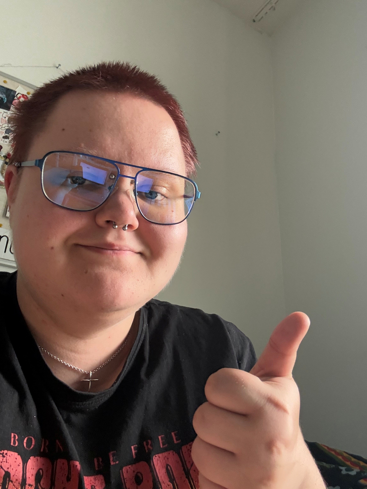

Moi! Olen Juno Lamponen. Alempana on kuva minusta! Opiskelen Laurea-ammattikorkeakoulussa IT-tradenomin tutkintoa. Ennen opiskelua työskentelin neuvolassa laitoshuoltajana, eli siivoojana. Työt puhtaudenpitopalveluissa on arvokasta, mutta harvoin tuntuu siltä. Olin ylpeä, että pystyin elättämään itseäni, koska asun omillani, mutta en suosittelisi siivoojan työnkuvaa. Loppujen lopuksi opin paljon, mutta se ei ollut paikka minulle. Joten, kahden välivuoden jälkeen, hain Laureaan. Olin ja olen edelleen innostunut aloittamaan opinnot.

| Opintojaksot | Ajatukset lyhyesti |
|---|---|
| Asiantuntijaviestintä ja projektityö | Melko työläs, essee oli vaikea, ryhmä oli tosi mukava |
| ICT-infrastruktuuri ja pilvipalvelut | Todella kiinnostava ja hyödyllinen sisällöllisesti, tentti oli helppo, hyvät antimet tulevaa varten |
| Digitaalisen palvelun perusteet | Hieman puuduttava, sisällöltään tärkeä, hyvin pohjustetut tehtävänannot |
Mikäli haluat, että otan sinuun yhteyttä, jättä alle yhteystietosi!